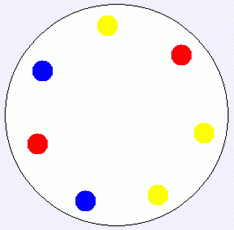
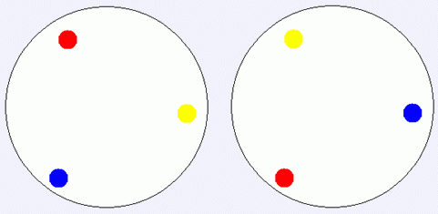

Constantine 刚结束在 MySky Island 的度假，正准备离开的时候，他想送给她的好朋友 YY 一份特别的礼物—— MySky Island 上特别的手工艺品宝石纪念币。宝石纪念币的一面上刻着小岛的名字 MySky，或者收礼物的人，比如“to YY”。不过特别的是，每枚纪念币的反面，依次均匀的镶着一圈共 $n$ 颗彩色的宝石。例如，下面是一个 $n=7$ 时的简单例子：

因为纪念币是圆的，所以如果两种“宝石颜色的排布”如果经过旋转后对应位置的颜色相重合，就认为他们是相同的排布方式（请注意：纪念币只有一面镶宝石，所以两种排布若经过翻转以后是可以重合的，但只经过旋转无法使两者重合，则认为他们是不同的排布）。例如下面的两种排布方式就是相同的：

另外，由于 MySky Island 当地的习俗，每枚钱币上的宝石都只能嵌奇数颗宝石，不然就认为是不吉利的。宝石纪念币是现场制作的，游客可以选择自己喜欢的颜色的宝石。所以 Constantine 选出了他最喜欢的 $17$ 种颜色（你如果要问为什么选这么多的话，只能告诉你因为 $17$ 是他的幸运数字）。他想知道，如果他要求纪念币把这 $17$ 种颜色的宝石都用上的话，可以制作出多少枚不同的纪念币。由于答案可能很大，你只需要计算答案的最后 $120$ 位就可以了。
 Comet OJ
Comet OJ